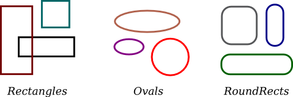
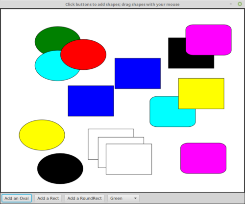

Inheritance and Polymorphism
A class represents a set of objects which share the same structure and behaviors. The class determines the structure of objects by specifying variables that are contained in each instance of the class, and it determines behavior by providing the instance methods that express the behavior of the objects. This is a powerful idea. However, something like this can be done in most programming languages. The central new idea in object-oriented programming—the idea that really distinguishes it from traditional programming—is to allow classes to express the similarities among objects that share some, but not all, of their structure and behavior. Such similarities can be expressed using inheritance and polymorphism.
Extending Existing Classes
Any programmer should know what is meant by subclass, inheritance, and polymorphism. However, it will probably be a while before you actually do anything with inheritance except for extending classes that already exist. In the first part of this section, we look at how that is done.
In day-to-day programming, especially for programmers who are just beginning to work with objects, subclassing is used mainly in one situation: There is an existing class that can be adapted with a few changes or additions. This is much more common than designing groups of classes and subclasses from scratch. The existing class can be extended to make a subclass. The syntax for this is
public class subclass-name extends existing-class-name {
.
. // Changes and additions.
.
}As an example, suppose you want to write a program that plays the card game, Blackjack. You can use the Card, Hand, and Deck classes developed in Section 5.4. However, a hand in the game of Blackjack is a little different from a hand of cards in general, since it must be possible to compute the "value" of a Blackjack hand according to the rules of the game. The rules are as follows: The value of a hand is obtained by adding up the values of the cards in the hand. The value of a numeric card such as a three or a ten is its numerical value. The value of a Jack, Queen, or King is 10. The value of an Ace can be either 1 or 11. An Ace should be counted as 11 unless doing so would put the total value of the hand over 21. Note that this means that the second, third, or fourth Ace in the hand will always be counted as 1.
One way to handle this is to extend the existing Hand class by adding a method that computes the Blackjack value of the hand. Here's the definition of such a class:
public class BlackjackHand extends Hand {
/**
* Computes and returns the value of this hand in the game
* of Blackjack.
*/
public int getBlackjackValue() {
int val; // The value computed for the hand.
boolean ace; // This will be set to true if the
// hand contains an ace.
int cards; // Number of cards in the hand.
val = 0;
ace = false;
cards = getCardCount(); // (method defined in class Hand.)
for ( int i = 0; i < cards; i++ ) {
// Add the value of the i-th card in the hand.
Card card; // The i-th card;
int cardVal; // The blackjack value of the i-th card.
card = getCard(i);
cardVal = card.getValue(); // The normal value, 1 to 13.
if (cardVal > 10) {
cardVal = 10; // For a Jack, Queen, or King.
}
if (cardVal == 1) {
ace = true; // There is at least one ace.
}
val = val + cardVal;
}
// Now, val is the value of the hand, counting any ace as 1.
// If there is an ace, and if changing its value from 1 to
// 11 would leave the score less than or equal to 21,
// then do so by adding the extra 10 points to val.
if ( ace == true && val + 10 <= 21 )
val = val + 10;
return val;
} // end getBlackjackValue()
} // end class BlackjackHandSince BlackjackHand is a subclass of Hand, an object of type BlackjackHand contains all the instance variables and instance methods defined in Hand, plus the new instance method named getBlackjackValue(). For example, if bjh is a variable of type BlackjackHand, then the following are all legal: bjh.getCardCount(), bjh.removeCard(0), and bjh.getBlackjackValue(). The first two methods are defined in Hand, but are inherited by BlackjackHand.
Variables and methods from the Hand class are inherited by BlackjackHand, and they can be used in the definition of BlackjackHand just as if they were actually defined in that class—except for any that are declared to be private, which prevents access even by subclasses. The statement "cards = getCardCount();" in the above definition of getBlackjackValue() calls the instance method getCardCount(), which was defined in Hand.
Extending existing classes is an easy way to build on previous work. We'll see that many standard classes have been written specifically to be used as the basis for making subclasses.
Access modifiers such as public and private are used to control access to members of a class. There is one more access modifier, protected, that comes into the picture when subclasses are taken into consideration. When protected is applied as an access modifier to a method or member variable in a class, that member can be used in subclasses—direct or indirect—of the class in which it is defined, but it cannot be used in non-subclasses. (There is an exception: A protected member can also be accessed by any class in the same package as the class that contains the protected member. Recall that using no access modifier makes a member accessible to classes in the same package, and nowhere else. Using the protected modifier is strictly more liberal than using no modifier at all: It allows access from classes in the same package and from subclasses that are not in the same package.)
When you declare a method or member variable to be protected, you are saying that it is part of the implementation of the class, rather than part of the public interface of the class. However, you are allowing subclasses to use and modify that part of the implementation.
For example, consider a PairOfDice class that has instance variables die1 and die2 to represent the numbers appearing on the two dice. We could make those variables private to make it impossible to change their values from outside the class, while still allowing read access through getter methods. However, if we think it possible that PairOfDice will be used to create subclasses, we might want to make it possible for subclasses to change the numbers on the dice. For example, a GraphicalDice subclass that draws the dice might want to change the numbers at other times besides when the dice are rolled. In that case, we could make die1 and die2 protected, which would allow the subclass to change their values without making them public to the rest of the world. (An even better idea would be to define protected setter methods for the variables. A setter method could, for example, ensure that the value that is being assigned to the variable is in the legal range 1 through 6.)
Inheritance and Class Hierarchy
The term inheritance refers to the fact that one class can inherit part or all of its structure and behavior from another class. The class that does the inheriting is said to be a subclass of the class from which it inherits. If class B is a subclass of class A, we also say that class A is a superclass of class B. (Sometimes the terms derived class and base class are used instead of subclass and superclass; this is the common terminology in C++.) A subclass can add to the structure and behavior that it inherits. It can also replace or modify inherited behavior (though not inherited structure). The relationship between subclass and superclass is sometimes shown by a diagram in which the subclass is shown below, and connected to, its superclass, as shown on the left below:
In Java, to create a class named "B" as a subclass of a class named "A", you would write
class B extends A {
.
. // additions to, and modifications of,
. // stuff inherited from class A
.
}Several classes can be declared as subclasses of the same superclass. The subclasses, which might be referred to as "sibling classes," share some structures and behaviors—namely, the ones they inherit from their common superclass. The superclass expresses these shared structures and behaviors. In the diagram shown on the right above, classes B, C, and D are sibling classes. Inheritance can also extend over several "generations" of classes. This is shown in the diagram, where class E is a subclass of class D which is itself a subclass of class A. In this case, class E is considered to be a subclass of class A, even though it is not a direct subclass. This whole set of classes forms a small class hierarchy.
Example: Vehicles
Let's look at an example. Suppose that a program has to deal with motor vehicles, including cars, trucks, and motorcycles. (This might be a program used by a Department of Motor Vehicles to keep track of registrations.) The program could use a class named Vehicle to represent all types of vehicles. Since cars, trucks, and motorcycles are types of vehicles, they would be represented by subclasses of the Vehicle class, as shown in this class hierarchy diagram:
The Vehicle class would include instance variables such as registrationNumber and owner and instance methods such as transferOwnership(). These are variables and methods common to all vehicles. The three subclasses of Vehicle—Car, Truck, and Motorcycle—could then be used to hold variables and methods specific to particular types of vehicles. The Car class might add an instance variable numberOfDoors, the Truck class might have numberOfAxles, and the Motorcycle class could have a boolean variable hasSidecar. (Well, it could in theory at least, even if it might give a chuckle to the people at the Department of Motor Vehicles.) The declarations of these classes in a Java program would look, in outline, like this (although they are likely to be defined in separate files and declared as public classes):
class Vehicle {
int registrationNumber;
Person owner; // (Assuming that a Person class has been defined!)
void transferOwnership(Person newOwner) {
. . .
}
. . .
}
class Car extends Vehicle {
int numberOfDoors;
. . .
}
class Truck extends Vehicle {
int numberOfAxles;
. . .
}
class Motorcycle extends Vehicle {
boolean hasSidecar;
. . .
}Suppose that myCar is a variable of type Car that has been declared and initialized with the statement
Car myCar = new Car();Given this declaration, a program could refer to myCar.numberOfDoors, since numberOfDoors is an instance variable in the class Car. But since class Car extends class Vehicle, a car also has all the structure and behavior of a vehicle. This means that myCar.registrationNumber, myCar.owner, and myCar.transferOwnership() also exist.
Now, in the real world, cars, trucks, and motorcycles are in fact vehicles. The same is true in a program. That is, an object of type Car or Truck or Motorcycle is automatically an object of type Vehicle too. This brings us to the following Important Fact:
A variable that can hold a reference
to an object of class A can also hold a reference
to an object belonging to any subclass of A.
The practical effect of this in our example is that an object of type Car can be assigned to a variable of type Vehicle. That is, it would be legal to say
Vehicle myVehicle = myCar;or even
Vehicle myVehicle = new Car();After either of these statements, the variable myVehicle holds a reference to a Vehicle object that happens to be an instance of the subclass, Car. The object "remembers" that it is in fact a Car, and not just a Vehicle. Information about the actual class of an object is stored as part of that object. It is even possible to test whether a given object belongs to a given class, using the instanceof operator. The test:
if (myVehicle instanceof Car) ...determines whether the object referred to by myVehicle is in fact a car.
On the other hand, the assignment statement
myCar = myVehicle; // ERROR!would be illegal because myVehicle could potentially refer to other types of vehicles that are not cars. This is similar to a problem we saw previously in Subsection 2.5.6: The computer will not allow you to assign an int value to a variable of type short, because not every int is a short. Similarly, it will not allow you to assign a value of type Vehicle to a variable of type Car because not every vehicle is a car. As in the case of ints and shorts, the solution here is to use type-casting. If, for some reason, you happen to know that myVehicle does in fact refer to a Car, you can use the type cast (Car)myVehicle to tell the computer to treat myVehicle as if it were actually of type Car. So, you could say
myCar = (Car)myVehicle;and you could even refer to ((Car)myVehicle).numberOfDoors. (The parentheses are necessary because of precedence. The "." has higher precedence than the type-cast, so (Car)myVehicle.numberOfDoors would be read as (Car)(myVehicle.numberOfDoors), an attempt to type-cast the int myVehicle.numberOfDoors into a Vehicle, which is impossible.)
As an example of how this could be used in a program, suppose that you want to print out relevant data about the Vehicle referred to by myVehicle. If it's a Car, you will want to print out the car's numberOfDoors, but you can't say myVehicle.numberOfDoors, since there is no numberOfDoors in the Vehicle class. But you could say:
System.out.println("Vehicle Data:");
System.out.println("Registration number: "
+ myVehicle.registrationNumber);
if (myVehicle instanceof Car) {
System.out.println("Type of vehicle: Car");
Car myCar;
myCar = (Car)myVehicle; // Type-cast to get access to numberOfDoors!
System.out.println("Number of doors: " + myCar.numberOfDoors);
}
else if (myVehicle instanceof Truck) {
System.out.println("Type of vehicle: Truck");
Truck myTruck;
myTruck = (Truck)myVehicle; // Type-cast to get access to numberOfAxles!
System.out.println("Number of axles: " + myTruck.numberOfAxles);
}
else if (myVehicle instanceof Motorcycle) {
System.out.println("Type of vehicle: Motorcycle");
Motorcycle myCycle;
myCycle = (Motorcycle)myVehicle; // Type-cast to get access to hasSidecar!
System.out.println("Has a sidecar: " + myCycle.hasSidecar);
}Note that for object types, when the computer executes a program, it checks whether type-casts are valid. So, for example, if myVehicle refers to an object of type Truck, then the type cast (Car)myVehicle would be an error. When this happens, an exception of type ClassCastException is thrown. This check is done at run time, not compile time, because the actual type of the object referred to by myVehicle is not known when the program is compiled. The code above avoids ClassCastExceptions by using instanceof to test the type of the variable before doing a type cast.
In Java 17, the previous example can also be written using one of the more obscure new language features, known as pattern matching for instanceof. Pattern matching makes it possible to include declaration and initialization of a variable in an instanceof test. For example,
if (myVehicle instanceof Car myCar) {
System.out.println("Type of vehicle: Car");
System.out.println(Number of doors: " + myCar.numberOfDoors);
}If the test succeeds, then the variable myCar is created and automatically assigned the value (Car)myVehicle. The scope of the variable is limited to the body of the if statement.
Polymorphism
As another example, consider a program that deals with shapes drawn on the screen. Let's say that the shapes include rectangles, ovals, and roundrects of various colors. (A "roundrect" is just a rectangle with rounded corners.)

Three classes, Rectangle, Oval, and RoundRect, could be used to represent the three types of shapes. These three classes would have a common superclass, Shape, to represent features that all three shapes have in common. The Shape class could include instance variables to represent the color, position, and size of a shape, and it could include instance methods for changing the values of those properties. Changing the color, for example, might involve changing the value of an instance variable, and then redrawing the shape in its new color:
class Shape {
Color color; // (must be imported from package javafx.scene.paint)
void setColor(Color newColor) {
// Method to change the color of the shape.
color = newColor; // change value of instance variable
redraw(); // redraw shape, which will appear in new color
}
void redraw() {
// method for drawing the shape
? ? ? // what commands should go here?
}
. . . // more instance variables and methods
} // end of class ShapeNow, you might see a problem here with the method redraw(). The problem is that each different type of shape is drawn differently. The method setColor() can be called for any type of shape. How does the computer know which shape to draw when it executes the redraw() command in the setColor() method? Informally, we can answer the question like this: The computer executes redraw() by asking the shape to redraw itself. Every shape object knows what it has to do to redraw itself.
In practice, this means that each of the specific shape classes has its own redraw() method:
class Rectangle extends Shape {
void redraw() {
. . . // commands for drawing a rectangle
}
. . . // possibly, more methods and variables
}
class Oval extends Shape {
void redraw() {
. . . // commands for drawing an oval
}
. . . // possibly, more methods and variables
}
class RoundRect extends Shape {
void redraw() {
. . . // commands for drawing a rounded rectangle
}
. . . // possibly, more methods and variables
}Suppose that someShape is a variable of type Shape. Then it could refer to an object of any of the types Rectangle, Oval, or RoundRect. As a program executes, and the value of someShape changes, it could even refer to objects of different types at different times! Whenever the statement
someShape.redraw();is executed, the redraw method that is actually called is the one appropriate for the type of object to which someShape actually refers. There may be no way of telling, from looking at the text of the program, what shape this statement will draw, since it depends on the value that someShape happens to have when the program is executed. Even more is true. Suppose the statement is in a loop and gets executed many times. If the value of someShape changes as the loop is executed, it is possible that the very same statement "someShape.redraw();" will call different methods and draw different kinds of shapes as it is executed several times. We say that the redraw() method is polymorphic. A method is polymorphic if the action performed by the method depends on the actual type of the object to which the method is applied at run time. Polymorphism is one of the major distinguishing features of object-oriented programming. This can be seen most vividly, perhaps, if we have an array of shapes. Suppose that shapelist is a variable of type Shape[], and that the array has already been created and filled with data. Some of the elements in the array might be Rectangles, some might be Ovals, and some might be RoundRects. We can draw all the shapes in the array by saying
for (int i = 0; i < shapelist.length; i++ ) {
Shape shape = shapelist[i];
shape.redraw();
}As the computer goes through this loop, the statement shape.redraw() will sometimes draw a rectangle, sometimes an oval, and sometimes a roundrect, depending on the type of object to which array element number i refers.
Perhaps this becomes more understandable if we change our terminology a bit: In object-oriented programming, calling a method is often referred to as sending a message to an object. The object responds to the message by executing the appropriate method. The statement "someShape.redraw();" is a message to the object referred to by someShape. Since that object knows what type of object it is, it knows how it should respond to the message. From this point of view, the computer always executes "someShape.redraw();" in the same way: by sending a message. The response to the message depends, naturally, on who receives it. From this point of view, objects are active entities that send and receive messages, and polymorphism is a natural, even necessary, part of this view. Polymorphism just means that different objects can respond to the same message in different ways.
One of the most beautiful things about polymorphism is that it lets code that you write do things that you didn't even conceive of, at the time you wrote it. Suppose that I decide to add beveled rectangles to the types of shapes my program can deal with. A beveled rectangle has a triangle cut off each corner:
To implement beveled rectangles, I can write a new subclass, BeveledRect, of class Shape and give it its own redraw() method. Automatically, code that I wrote previously—such as the statement someShape.redraw()—can now suddenly start drawing beveled rectangles, even though the beveled rectangle class didn't exist when I wrote the statement!
In the statement "someShape.redraw();", the redraw message is sent to the object someShape. Look back at the method in the Shape class for changing the color of a shape:
void setColor(Color newColor) {
color = newColor; // change value of instance variable
redraw(); // redraw shape, which will appear in new color
}A redraw message is sent here, but which object is it sent to? Well, the setColor method is itself a message that was sent to some object. The answer is that the redraw message is sent to that same object, the one that received the setColor message. If that object is a rectangle, then it contains a redraw() method for drawing rectangles, and that is the one that is executed. If the object is an oval, then the redraw() method from the Oval class is executed. This is what you should expect, but it means that the "redraw();" statement in the setColor() method does not necessarily call the redraw() method in the Shape class! The redraw() method that is executed could be in any subclass of Shape. This is just another case of polymorphism.
Abstract Classes
Whenever a Rectangle, Oval, or RoundRect object has to draw itself, it is the redraw() method in the appropriate class that is executed. This leaves open the question, What does the redraw() method in the Shape class do? How should it be defined?
The answer may be surprising: We should leave it blank! The fact is that the class Shape represents the abstract idea of a shape, and there is no way to draw such a thing. Only particular, concrete shapes like rectangles and ovals can be drawn. So, why should there even be a redraw() method in the Shape class? Well, it has to be there, or it would be illegal to call it in the setColor() method of the Shape class, and it would be illegal to write "someShape.redraw();". The compiler would complain that someShape is a variable of type Shape and there's no redraw() method in the Shape class.
Nevertheless the version of redraw() in the Shape class itself will never actually be called. In fact, if you think about it, there can never be any reason to construct an actual object of type Shape! You can have variables of type Shape, but the objects they refer to will always belong to one of the subclasses of Shape. We say that Shape is an abstract class. An abstract class is one that is not used to construct objects, but only as a basis for making subclasses. An abstract class exists only to express the common properties of all its subclasses. A class that is not abstract is said to be concrete. You can create objects belonging to a concrete class, but not to an abstract class. A variable whose type is given by an abstract class can only refer to objects that belong to concrete subclasses of the abstract class.
Similarly, we say that the redraw() method in class Shape is an abstract method, since it is never meant to be called. In fact, there is nothing for it to do—any actual redrawing is done by redraw() methods in the subclasses of Shape. The redraw() method in Shape has to be there. But it is there only to tell the computer that all Shapes understand the redraw message. As an abstract method, it exists merely to specify the common interface of all the actual, concrete versions of redraw() in the subclasses. There is no reason for the abstract redraw() in class Shape to contain any code at all.
Shape and its redraw() method are semantically abstract. You can also tell the computer, syntactically, that they are abstract by adding the modifier "abstract" to their definitions. For an abstract method, the block of code that gives the implementation of an ordinary method is replaced by a semicolon. An implementation must then be provided for the abstract method in any concrete subclass of the abstract class. Here's what the Shape class would look like as an abstract class:
public abstract class Shape {
Color color; // color of shape.
void setColor(Color newColor) {
// method to change the color of the shape
color = newColor; // change value of instance variable
redraw(); // redraw shape, which will appear in new color
}
abstract void redraw();
// abstract method—must be defined in
// concrete subclasses
. . . // more instance variables and methods
} // end of class ShapeOnce you have declared the class to be abstract, it becomes illegal to try to create actual objects of type Shape, and the computer will report a syntax error if you try to do so.
Note, by the way, that the Vehicle class discussed above would probably also be an abstract class. There is no way to own a vehicle as such—the actual vehicle has to be a car or a truck or a motorcycle, or some other "concrete" type of vehicle.
Recall from Subsection 5.3.2 that a class that is not explicitly declared to be a subclass of some other class is automatically made a subclass of the standard class Object. That is, a class declaration with no "extends" part such as
public class myClass { . . .is exactly equivalent to
public class myClass extends Object { . . .This means that class Object is at the top of a huge class hierarchy that includes every other class. (Semantically, Object is an abstract class, in fact the most abstract class of all. Curiously, however, it is not declared to be abstract syntactically, which means that you can create objects of type Object. However, there is not much that you can do with them.)
Since every class is a subclass of Object, a variable of type Object can refer to any object whatsoever, of any type. Similarly, an array of type Object[] can hold objects of any type.
The sample source code file ShapeDraw.java uses an abstract Shape class and an array of type Shape[] to hold a list of shapes. You might want to look at this file, even though you won't be able to understand all of it at this time. Even the definitions of the shape classes are somewhat different from those that I have described in this section. (For example, the draw() method has a parameter of type GraphicsContext>. This parameter is required because all drawing in Java requires a graphics context.) I'll return to similar examples in later chapters when you know more about GUI programming. However, it would still be worthwhile to look at the definition of the Shape class and its subclasses in the source code. You might also check how an array is used to hold the list of shapes. Here is a scaled-down screenshot from the program:

If you run the ShapeDraw program, you can click one of the buttons along the bottom to add a shape to the picture. The new shape will appear in the upper left corner of the drawing area. The color of the shape is given by the "pop-up menu" of colors below the drawing area. Once a shape is on the screen, you can drag it around with the mouse. A shape will maintain the same front-to-back order with respect to other shapes on the screen, even while you are dragging it. However, you can move a shape out in front of all the other shapes if you hold down the shift key as you click on it.
In the program, the only time when the actual class of a shape is used is when that shape is added to the screen. Once the shape has been created, it is manipulated entirely as an abstract shape. The routine that implements dragging, for example, works with variables of type Shape and makes no reference to any of its subclasses. As the shape is being dragged, the dragging routine just calls the shape's draw method each time the shape has to be drawn, so it doesn't have to know how to draw the shape or even what type of shape it is. The object is responsible for drawing itself. If I wanted to add a new type of shape to the program, I would define a new subclass of Shape, add another button, and program the button to add the correct type of shape to the screen. No other changes in the programming would be necessary.
Final Methods and Classes
We have seen how the final modifier applies to variables: It makes it impossible to assign a new value to the variable after it has been initialized. (For a final instance variable, the initialization can take place in the constructors for the class that contains the variable.) However, the final modifier can also be applied to classes and to method definitions.
A final class cannot be used be used as a basis for making subclasses. That is, if a class is defined as "final class A...", then it is a syntax error to try to extend A with "class B extends A...".
If a method is declared final in a class, then it is not possible for a subclass to contain a method with the same signature. That is, the method cannot be "overridden". This is true both for static methods and for instance methods. Note that in a final class, all methods are implicitly final since it is not even possible to make a subclass of that class.
The idea is that a final class or method is in its final form—it cannot be modified or replaced by a subclass. With final, it is possible to make a guarantee about the behavior of a method. For example, suppose that a Rectangle class has an instance method draw() that draws a rectangle, and that rect is a variable of type Rectangle. If draw() is a final method, then we are guaranteed that a call to rect.draw() will draw a rectangle. But if draw() is not final, then it could draw anything, or nothing! The problem is that rect could actually refer to an object belonging to some subclass of Rectangle, and that subclass could define its own draw() method that overrides the draw() method from class Rectangle. Using final can make it easier to reason about the behavior of a program.